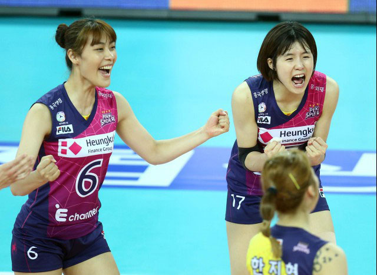

|
불꽃 놀이처럼 아름답고 온 몸을 떨게 만든 황홀한 쇼 - 도로공사 전 5트(2015.10.26.월)
|

A. 1~2세트
B. 3~4 세트
C. 5세트.
3. 승리의 발판을 마련 하는 이재영의 중앙 송곳 강타 14번 (6 : 8) |
|---|
-
용문한량 2015-10-26 10:22:48
황민경선수에게 목적타 서브를 시작으로 초반부터 김수지 김혜진선수가 장소연 정대영선수를 많이 움직이게 하면서 지치게 만들면 공격도 수월해질 테고 수비도 시크라선수에게 집중할 수 있을 테니까 경기를 쉽게 풀어나가리라 봅니다.댓글삭제 -

관리자 2015-10-26 10:22:48
흥국 신연경 도공 최주희는 정시영과 고예림의 경기력을봐서 투입하지 않을까 생각합니다 어찌됐던 신연경과 최주희는 투입가능성이 높아 보입니다 저역시 정시영보다는 신연경이 조직력 균형에 점수를 주고싶네요 공격은 이재영,테일러가 있기에 수비가 안정적인 신연경쪽으로 마음이 기울어지는군요 다만 기본틀이 정시영을 베스트로 갈것같습니다 정시영이 라이트를 지켜줘야 되고요댓글삭제 -
용문한량용문한량용문한량용문한량 2015-10-26 10:22:48
글세여,,도공 스타팅 멤버에..고예림 선수를 넣었는데여 전 못나올거 같은데여,, 아마 최주희 선수가 스타팅 으로 나올듯 합니다,, 흥국 역시 정시영 선수 보다 전 신연경 선수를 그자리에 넣는 것도 괘안다 보여 집니다,,서브나,,수비는 분명 좋습니다,신연경 선수가요,, 그건 감독님이 알아서 판단 해주시겠죠,, 흥국 교체자원에,,,,주예나 선수가 빠졌네여 오히려 더 나올 교체로 확률이 높겠죠? ^^*이두팀은 작년에도 3승3패 호각 지새 였습니다 누가 분명 이긴다는 장담 못합니다,,이경기 역시 전 1세트 가져가는 팀이 이길 확률이 높다 보겠습니다 기선제압을 한팀이 쉽게 분명 경기를 가져갈거라 보여지네여,,이두팀은 분명 리시브에의해 승패가 갈라질거 입니다,,댓글삭제